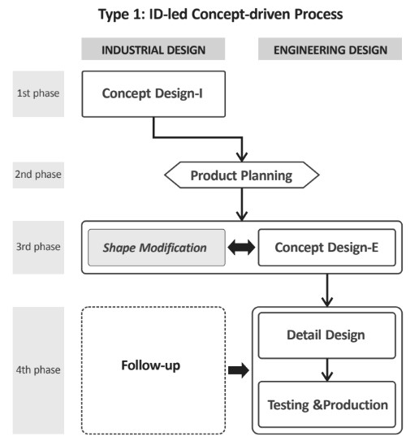
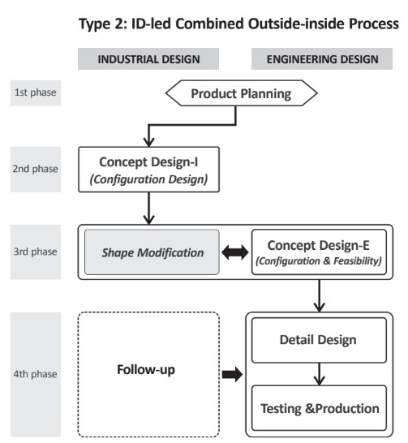
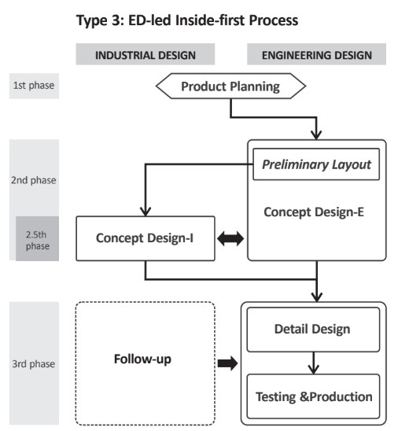
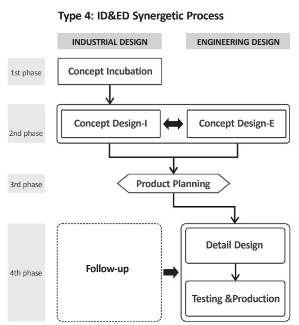

Assignment 2 <<
Previous Next >> Topic 1
Topic 0
DigitalProductCollaboration.pdf
什麼是 "設計 "協作？
設計協作就是在設計為先的環境下的協作。協作通常被定義為兩個或更多的人為了一個共同的目標而共同完成同一個任務，但設計協作涉及的內容要多得多。設計協作包括了更多的人，他們有不同的技能，更多的挑戰，以及更大的目標和更深遠的影響。
為什麼設計合作很重要？
你可以在沒有合作的情況下設計出一個產品，但要想讓這個產品優秀，需要一個合作的設計過程。這就是為什麼設計協作是如此重要的原因。
可以利用幾個核心領域的專業知識：戰略、設計、開發和增長。每個人都有自己的技能和專長。設計合作將這些人的思想結合在一起，將他們各自的專業技能結合在一起，創造出解決共同目標的各個方面的解決方案。設計合作不是從一個角度來處理一個問題，而是將問題放在所有專家的面前，迫使他們考慮新的觀點和可能性。
培養設計協作的心態
正確的心態對於在設計過程中建立有效的合作關係有很大的幫助。它為誰來合作、如何合作以及合作的目的奠定了準則。
合作是為每個人服務的
設計師有時會認為，不是設計師的人沒有資格給出好的反饋。但是，偉大的設計不僅僅是視覺效果。它包含了產品的一切，從品牌塑造到工程設計再到產品的成長。設計合作會讓很多人參與進來，每個人都有自己的觀點和優勢。它讓每個人都有發言權。這些新鮮的視角給了設計師更多的信息。觀點使設計師能夠在選擇上做出正確的決策，而這些決策會對以後的其他設計、開發和營銷方案產生持久的影響。
合作是開放的、誠實的、無畏的
把你的工作（和你自己）擺在那裡並不容易。情緒會阻礙你提供開放和誠實的反饋，特別是當你擔心傷害到對方的感情時。這並不意味著在合作中沒有感情的地方。在設計中，一件事情給你的感覺如何是很重要的。我們為人思考，為人創造解決方案...........那些有情感的人，在決策中使用情感的人。將情感排除在談話之外，可能會使一個潛在的想法或解決方案變得不重要。
協作不僅僅是新的想法
對合作反饋持開放和接受的態度是一回事，而對這些想法進行分析，並將其作為催化劑來激發自己的靈感，則是另一回事。這是一種更高級的技能，會隨著時間的推移而發展。練習這一點的一個方法是成為一個更好的傾聽者。
選擇合適的工具
FIGMA
很適合多人在同一區域的設計文件中工作。您可以實時觀看隊友設計或共同完成同一設計。減少了一個人在孤島上工作的能力，不需要添加不必要的打磨或創建靜態交付品來實現協作。因此，你不需要改變工作流程來炫耀設計。在原生環境下，可以很容易地看到作品，並與之互動，隨意應用調整。何時使用。流程文檔、高保真線框、即時協作，以及帶領客戶通過一系列的屏幕來解釋和獲得設計方向的反饋。
MARVEL
是一個更乾淨、更正式、更集中的空間，非常適合與非設計團隊成員協作。它消除了客戶需要支付賬戶或對工具有深入了解才能看到工作的所有需求。客戶可以通過Marvel app下載屏幕，在設備環境中看到屏幕的操作。
Zeplin
是一個有用的手辦工具，可以讓開發人員深入到設計工作的細微細節。 (我們在這裡對Zeplin進行了更深入的討論)。
Quip
是一個很好的頭腦風暴和產品/流程文檔的平台。我們用它來記錄和組織團隊成員在項目工作時需要知道的所有上下文和知識。它還可以用於頭腦風暴的新想法，而不是以視覺為中心。
協作過程
階段一：構思框架和集體研討
階段二：研究與背景
階段三：迭代和反饋
階段四：客戶反饋和開發
結論：
通過設計協作創造出更好的產品 - 思維、工具和流程。要解決複雜的、關鍵的問題，需要設計協作來解決，而這些問題是伴隨著打造優秀產品和體驗而產生的。通過利用多個團隊成員跨學科的專業知識，設計協作可以確保團隊從各個角度應對挑戰，並得出更好的解決方案。有了正確的思維方式、工具和流程，設計協作可以讓團隊通過創造性的思考和迭代，使團隊能夠更深入地思考和迭代。
IndustrialAndEngineeringProductDesignCollaboration.pdf
協作式的產品設計流程
工業設計和工程設計在本研究旨在闡明工業設計人員和工程設計人員是如何將工業設計人員和工程設計人員結合起來的。
我們發現四種典型的合作產品設計過程及其特徵類型：
(1) ID主導的概念驅動過程

(2) ID主導的過程

(3)以ED為首的 "內向型 "流程

(4) ID&ED協同過程

關鍵詞：設計流程建模、協同設計、產品設計、工業設計、工程設計
工程設計和工業設計的綜合貢獻是成功地將產品推向市場是必不可少的。
產品設計很難從單一學科的角度來解釋。然而，眾所周知，工程設計和工業設計在工程設計和工業設計上有很大不同的設計實踐，以及他們的設計實踐方法在某些方面是相反的。工業設計師的角色包括提升產品的用戶體驗，同時開發其外部形式和界面也是工業設計者的角色。他們運用美學和人體工程學方面的知識和技能在與工業設計人員的互動下，工程設計師參與實施工業設計人員提出的設計理念，工程設計人員提供了產品的功能、可靠和製造的手段。這就導致了工業設計者和工程設計者之間採用不同的方法。
通常有人認為，工程設計人員採用 "外向型 "的方式來進行設計。從功能到外觀的發展，而工業設計師則遵循 "從功能到外觀的發展 "的原則。
根據這些概念，以下提出了兩種設計策略：一種是 "由內而外 "的策略，定義為先設計出內部工作部件，從而約束了 外型，另一種是 "外向型 "策略。
這些設計策略指的是企業在特定條件下為達到特定目的而應採取的組合設計過程。然而，從經驗證據來看，關於這兩個戰略在工業項目中的應用。迄今為止，很少有人試圖在工業項目中應用這些戰略。
從工程設計的整體性角度看設計過程和工業設計，在這方面，我們調查了協作設計在工業背景下，這兩個學科的過程研究的問題是
1.哪些類型的合作產品設計流程的存在
2.什麼條件促使公司採用特定的流程的類型
根據兩個設計者群體的角色和特點，我們假設會有不同類型的外進式和內出式設計方法。我們假設外進式設計方法將是其特點是以工業設計為主導的設計過程，從而產生了工業設計者作為需求和標準提供者的角色，並在此基礎上，以工業設計為主導的設計過程，由內而外的方法將是一個以工程設計為主導的設計過程。工程設計師通過以下方式限制了工業設計師的任務範圍對工業設計人員的職責提出了初步要求。企業要想在激烈的市場競爭中獲得成功，就應該創建工業設計和工程設計的協作過程，適當地採取由外而內、由內而外的方法，使之與自身的情況相適應和目標。
本文的目的有兩個：
1.是闡明原著的形式協作式產品設計流程在實踐中的應用
2.是要確定用於不同目的的不同類型的工藝，以確定不同類型的工藝。
本文中反復出現的術語 "合作式產品設計 "指的是產品設計，由工業界人士共同創造的產品設計和工程設計，特別是在企業背景下，協同產品設計涉及到一系列的設計活動，如創建初步的產品概念，內部規格的決定，以及外部形式和內部結構的開發。因此，"協作式產品設計流程 "是指工業設計和工業設計的產品設計過程，工程設計直接參與到產品開發活動中。
在這一點上"工業設計 "主要涉及到消費品的外部形態、界面和用戶體驗的開發，不包括純圖形化的或僅僅是造型設計。工程設計 "開發的技術方案，用於放置消費品中的內部功能部件，並對構成產品的內部和外部部件進行定義，以實現批量生產。我們將從事此類活動的工程師稱為 "工程設計人員"。
本文由三部分組成
1.介紹了研究方法
2.介紹了典型的合作產品設計流程，和它們的特點作為研究結果。
3.總結了研究結果，並論述了其對設計文獻的意義和貢獻。
1 研究方法
研究合作產品設計過程的類型及相關的條件下，我們採用了基礎理論的方法來收集數據，並對數據進行了分析。我們設計了一種重構工業設計師和工程設計師之間的協作設計過程的方法。基礎理論的方法是社會科學作為一種系統的理論建立方法，在社會科學中被廣泛使用。對於研究較少的領域，而在設計研究中，它早已被採用它使用歸納邏輯，從數據開始編碼階段，主要通過深入訪談和觀察進行收集。在編碼階段，一般有兩種策略，一是從數據中收集和編碼有意義的參考資料，並將其歸納為編碼類別，當數據中的數據被收集和編碼後，再將其歸入編碼類別。研究課題沒有明確的定義。另一種是採用預定義的編碼，根據特定主題進行分類，以確定相關的參考資料，當研究主題明確，我們採用了後一種策略，因為在設計過程中，對設計過程進行了廣泛的研究。我們首先對個別設計師進行了深入的訪談，並對他們進行了深入的訪談，收集了他們在設計項目中的故事。為了避免可能出現的失真 由於追溯賬目的不可靠或可能不准確，我們採用三個標準來選擇研究對象。
(1) 同類產品領域的多個公司
(2) 來自工程設計和工業設計部門的多個參與者
(3) 在整個產品研發週期內，已經完成的項目
我們的產品都是通過整個產品研發週期來完成的，我們樹立第一標準，提高研究成果的適用性。了解和分析項目背景，提高設計的適用性。因此，調查具有類似項目背景的多家公司，可以提供更好的機會，以實現應用研究結果。在第二條標準下，來自多個國家和地區的數據。不同觀點的信息員之間相互補充，以實現補償任何潛在的偏見。最後，在回溯性訪談中，設計過程可以通過收集和分析已經完成的設計項目的故事，並分析通過流程要素，為了基於轉錄的訪談數據來重構產品設計流程，我們首先確定了 "流程要素"，然後畫出了部分的 "流程要素"。個別設計師所實踐的設計過程。接下來，我們將所有各公司的部分流程轉化為協作式產品設計流程。用 "馬賽克法"。在構建了所有詳細的協作產品設計流程後，我們用 "流程塊 "來簡化它們，以確定類型的典型設計過程。最後，我們將其形象化為設計過程實際的設計過程及其特點，可以看出根據實際設計項目來確定，這可能與實際設計項目不同。
1.1 深入訪談
1.1.1 案例公司的選擇
為提高適用性，設計過程中應在以下幾個方面進行理解公司的背景和環境因此，我們將三項標準，通過指定案例公司進行探討。這三個標準如下。
1.公司應生產中型複雜電子消費類產品。
2.應具有獨立的工業設計和工程設計能力。
3.他們應該是市場上領先的公司，生產設計良好的高質量的產品。
1.1.2 受訪者的選擇
我們採用目的性抽樣和滾雪球式抽樣的方法選擇受訪者。
每家公司的看門人建議他們的設計者採訪中，我們選擇了被訪者的同事，並依次推薦了他們的同事。在這樣做的同時，我們選擇了受訪者滿足以下三個條件。
1.兩年以上的公司工作經驗
2.至少參與一個週期的產品開發過程
3.與同行的密切協作和互動
1.1.3 面試程序
我們採用了半結構化的深度訪談法，按照文獻中的建議指導，我們首先列出了大約20個詳細的問題，並將其歸類為四大主題：
1.個人信息
2.設計過程
3.角色和專業知識
4.互動
然後我們制定了四個關鍵問題，即：
1.你在團隊中的地位和作用是什麼？
2.產品設計的過程是如何進行的，在這個過程中發生了什麼？
3.在設計過程中，你有哪些任務，有哪些知識和你在執行項目時所需的技能是什麼？
4. 工業設計（者）和工程設計（者）是如何互動的？
Assignment 2 <<
Previous Next >> Topic 1